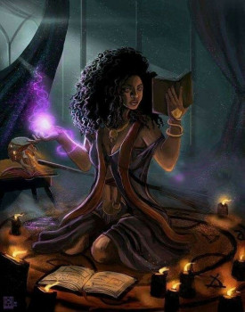
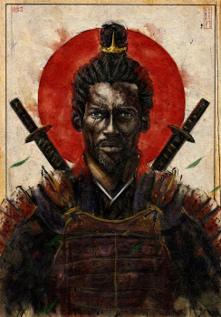
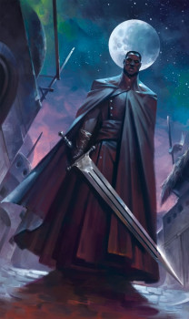

Bruxa
Alicia Magicty é uma feiticeira poderosa. Nasceu com o poder de controlar magias. Rainha do clã das Bruxas. Pode ver o futuro.
Samurai
Yasuke Warisson é líder do maior exército de samurais do Oriente. Primeiro Shogun forasteiro do Japão. Rápido como o vento.
Caçador
Almost Blade é um combatente poderoso. Possui o título de caçador lendário. Adquire força sobrehumana à noite. Caçador de vampiros.